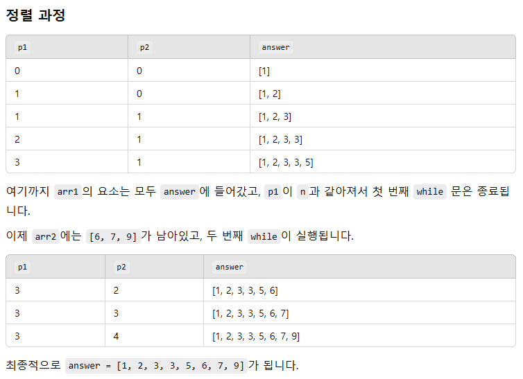

p1과 p2를 비교하여 더 작은 수를 answer에 push한다.
남은 배열 -> 가리키고 있는 지점부터 모두 push한다.
&& 둘 중 하나만 거짓이 되면 거짓이다.
p1 이 n이 되거나 혹은 p2가 m만큼 다 돌면 반복문을 멈춘다.
p1이가리키고있는 값을 먼저 푸시하고 그다음 p1이 플러스
1. 변수를 선언한 후 a와 b의 길이만큼 돈다.
2. a가 b보다 작으면 a를 푸시한다.
3. p1을 한 칸씩 이동하면서 값을 하나씩 가져온다.
후치연산자
초기 p1 = 0, p2 = 0
arr1[p1] = 1, arr2[p2] = 2
1 < 2 이므로, answer.push(arr1[p1++]); 실행됨
arr1[0] = 1 추가 후, p1이 1 증가하여 p1 = 1
다음 비교는 arr1[1] = 3과 arr2[0] = 2가 됨.
